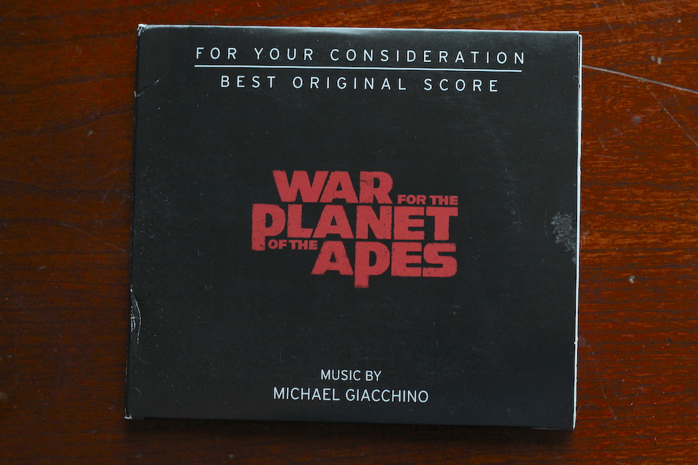
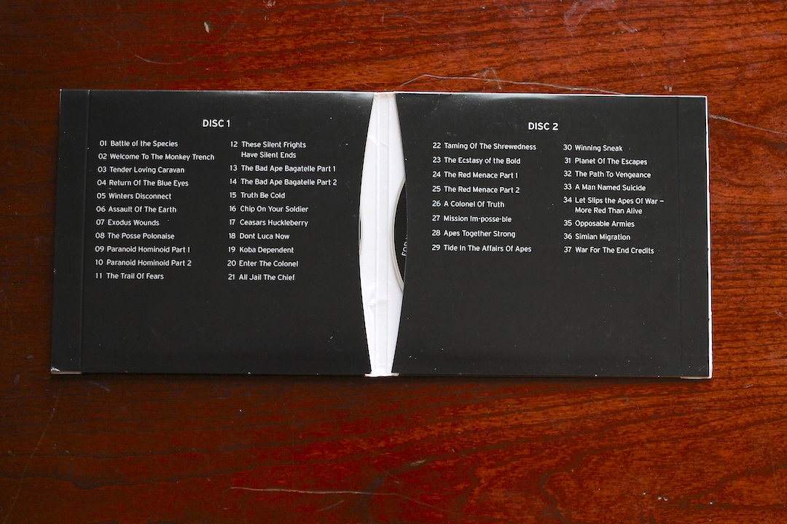
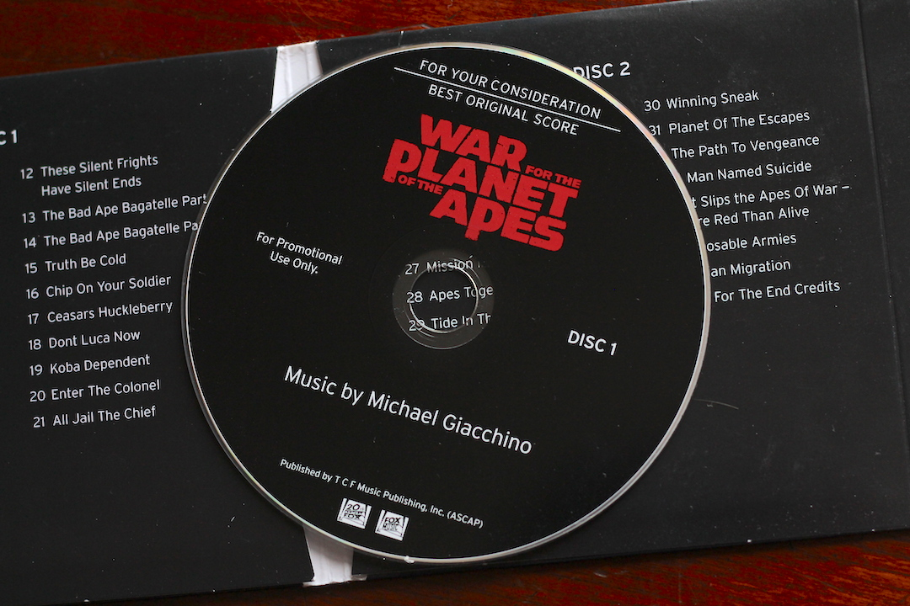
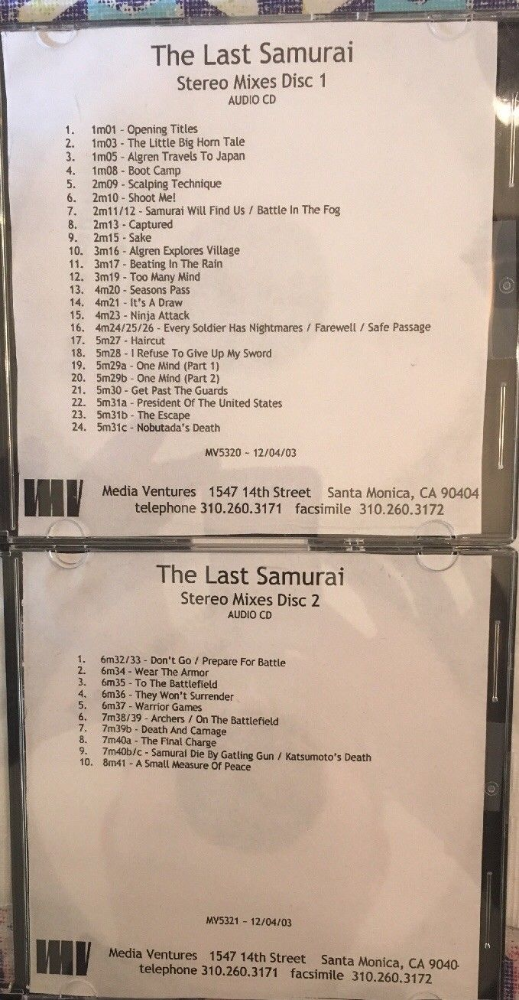

The Underground World of Film Score Collecting
My heart was racing.
I couldn't believe what I was seeing. The score for the Amazing Spider-Man 2 had finally leaked. I was just moments away from hearing the music I had dreamed of.
The movie came out in May 2014. It was now December 2017. Over 3 and 1/2 years of waiting. In the months preceding the leak, many people doubted the score would leak at all.
I rushed to log in to my account. I immediately clicked the link and downloaded it to my work computer. I couldn't risk waiting till I got to my personal computer. Sometimes links can dissapear without warning. Minutes later I downloaded another copy to a different computer I had access to. There was no way I'd let myself miss this opportunity.
A Community of Movie Score Lovers
I distinctly remember the first film score I fell in love with — The Lion King. I remember humming it long after the movie was over. I remember asking my dad where that music was from. He said he didn't know.
It wasn't until my teen years that I discovered dedicated composers wrote music for individual movies. My mind was blown. I found that Hans Zimmer wrote The Lion King and Mission Impossible 2. The latter was the first score I ever downloaded (and bought).
It wasn't until my twenties that I discovered a community of film score enthusiasts.
Understanding Film Score Releases
Why Film Scores Are Usually Incomplete
If you go to Amazon and Ebay, you'll find CDs of film scores for nearly every major film released. What do you mean that people wait for scores to leak if you can just buy them?
One of the most disappointing things that happens is to hear an awesome piece of music in the film and then buy the album only to find that the music you heard isn’t there.
The truth is CD releases of film scores tend to be incomplete and different than the music played in the film.
The reason for incompleteness is simple. The majority of score releases are limited to a single disk. Your regular CD can hold a maximum of 80 minutes of music. When you consider that most modern film are longer than two hours, you can see how the official score releases available for sale are missing 40+ minutes of music.
Besides the strict time limit, many CD releases include pop songs in addition to the actual score. This further detracts from how much of the actual score is available to listeners.
Many times the highlights of the score are included on the disc release. Other times they aren't, which is frustrating to say the least.
Only popular composers get multiple disc releases (think Hans Zimmer and the Interstellar specialty). In the age of digital downloads, you would think that studios would release more music. But this isn't the case. The only studio who seems to have embraced this is Universal Studios. In recent years they have released single-disc CDs along with a Digital-Download only of the entire score. This would include the scores to both The Mummy and Oblivion.
You mean to say that the score release on CD is not the same music used in the film?
If you start listening to scores, you'll quickly realize that a lot of the music on the album release is actually different than what is in the film.
Why is this?
Well first, there is the issue of mastering. The same music can be mixed a certain way in the film highlighting certain instruments or frequencies. But on album, the overall mix is different to make the music sound better as a whole. Sometimes the differences are stark, such as the film and album versions of The Lion King. The Album version used brickwall limiting, increased the mix of vocals/choir, and made the pan flute more prominent during the drum march.
Hans Zimmer - The Rightful King (Album Version - Legacy Edition) Hans Zimmer - Cue 9m22 (film version from compete score bootleg)Secondly, many composers like to include suites of thematic ideas, as opposed to the actual music that is synced to the movie. These suites emphasize the ideas a composer had, rather than the storytelling beats movie required. Hans Zimmer is especially guilty of this. Composer suites to emphasize the ideas rather than storytelling beats
Below is a sample of the album version of Time and the film version. Notice, how the electric guitar in the album version just starts playing. But, in the film version the electric guitar starts off in one channel and then moves to the other. Beyond that, there is a suspenseful part in the film version that plays when the customs agent is inspecting Cobb's passport.
Hans Zimmer - Time (Official Album Version) Hans Zimmer - 7m47 Welcome Home Mr. Cobb (Film Version)The Harsh Realities of Being A composer
Composing music for a film is not a glamorous job. There can be tons of work done that amounts to nothing. Consider the following:
- Multiple hours of music can be composed for a single film [Thin Red Line]
- Composers work can be rejected and replaced. Troy, Rogue One
- Music editors can take random, multiple pieces of a composer's work and stitch together something the composer never made themselves [No Time For Caution].
Where Do Complete Scores Come From?
Additional music from film scores can be acquired from a fair number of places.
- Bootleg leaks from people who worked on the project
- For Your Consideration Releases
- Promo Releases
- Individual composer websites
- Blu-Ray Rips
- Expanded or Anniversary re-releases from labels like Intrada or La-La Land Records.
For Your Consideration (FYC) releases are special discs or downloads provided to Academy members who vote on which movies are nominated for Oscars. Studio will release FYC scores for a select few of their films that they would like to see be nominated. Certain studios like Disney, Paramount, and 20th Century Fox usually include music in their FYC releases that wasn't on the official album release. Others, like Warner Bros are carbon copies of the album release. The actual discs or downloads are sent to academy members. However, many of these members will turn around and sell them on E-Bay. Paramount in particular has embraced digital downloads for their FYCs, which you can access here.
FYC releases are also usually unmastered and sound different than the official album release. For example, listen to the FYC and Album versions of Exodus Wounds from War For The Planet of The Apes. The album version has more choir, while the FYC version emphasizes the brass section more.
Michael Giacchino - Exodus (Album Version) Michael Giacchino - Exodus (FYC Version)


Blu-Ray Rips are notoriously messy and are seen as a last resort, except for when it comes to End Credit suites.
Bootlegs are common because there are dozens of people who work on a film. There is a lot of unreleased stuff. I had a friend intern at a film place. He saw someone walk out with The Hobbit before the film was ever released

How Does One Acquire A Complete Score?
There are several online places one can acquire a score, including:
- FFShrine
- SoulSeek
- Usenet
- Private Discord Servers
- La-La Land Recordrs
FFShrine is one of the strongest communities and includes people who actually recreate the film version of scores, those who remaster albums to sound more balanced, and those who create awesome custom covers and designs. There are many talented people.
This particular community is often in search of perfection (whether its album art, remastering, or entire reconstruction/recreation).